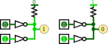

NOT Gate
NOT Gate
| Library: |
Gates |
| Introduced: |
2.0 Beta 1 |
| Appearance: |
| Shaped: |  |
|---|
| Rectangular: |  |
|---|
| DIN 40700: |  |
|---|
|
Behavior
The NOT Gate emits the complement of whatever input
it receives.
The truth table for a NOT gate is the following.
If the input is unspecified (i.e., floating) or an error, then the output
will be an error.
A multi-bit NOT gate will perform the above transformation bitwise on
its input.
Pins (assuming component faces east)
- West edge (input, bit width according to Data Bits attribute)
- The component's input.
- East edge (output, bit width according to Data Bits attribute)
- The output, whose value is the complement of the input value.
Attributes
When the component is selected or being added,
Alt-0 through Alt-9 alter its Data Bits
attribute
and the arrow keys alter its Facing
attribute.
- Facing
- The direction of the component (its output relative to its input).
- Data Bits
- The bit width of the component's input and output.
- Gate Size
- Determines whether to draw a larger or a smaller version of the
component.
- Output Value
- Indicates the set of possible outputs. When "0/1" is selected, both 0 and 1
are possible outputs and the component behaves according to the table above.
When "0/floating" is selected, the component will output a floating X value
whenever it would normally output a 1. Similarly, when "floating/1" is selected,
the component will output a floating X value whenever it would normally output
a 0. The floating output options allow for wired-or and wired-and connections,
as illustrated below: At left, the Not Gates' Output Value attributes are floating/1
and the resistor pulls to 0, giving wired-or behavior; at right, the Not Gates'
Output Value attributes are 0/floating and the resistor pulls to 1, giving
wired-and behavior.

- Label
- The text within the label associated with the gate.
- Label Font
- The font with which to render the label.
Poke Tool Behavior
None.
FPGA Synthesis
All basic gates support VHDL and Verilog synthesis.
Floating outputs (selected with 'Output Value' attribute) are not supported for
synthesis.
Up to Library Reference